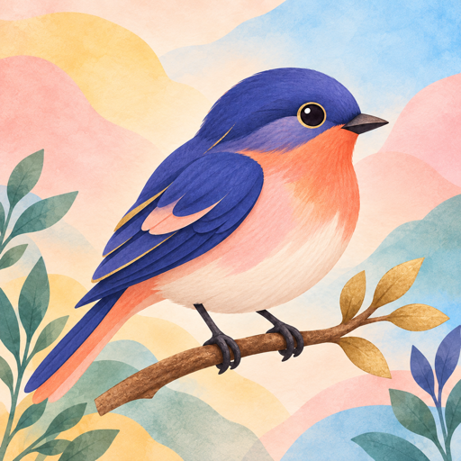

Official Birdex help centre
Pause. Listen.
Discover.
Help for your personal bird field guide, with clear answers about listening, observations and privacy.

Questions and troubleshooting
Support
Find recording tips, map information and help with your collection.
Your field notes stay yours
Privacy
See what stays on your phone and when Birdex connects to other services.
No accountStart exploring without creating a profile.
On-device recognitionBird sounds are analysed on your phone.
Local field journalYour observations remain in local app storage.